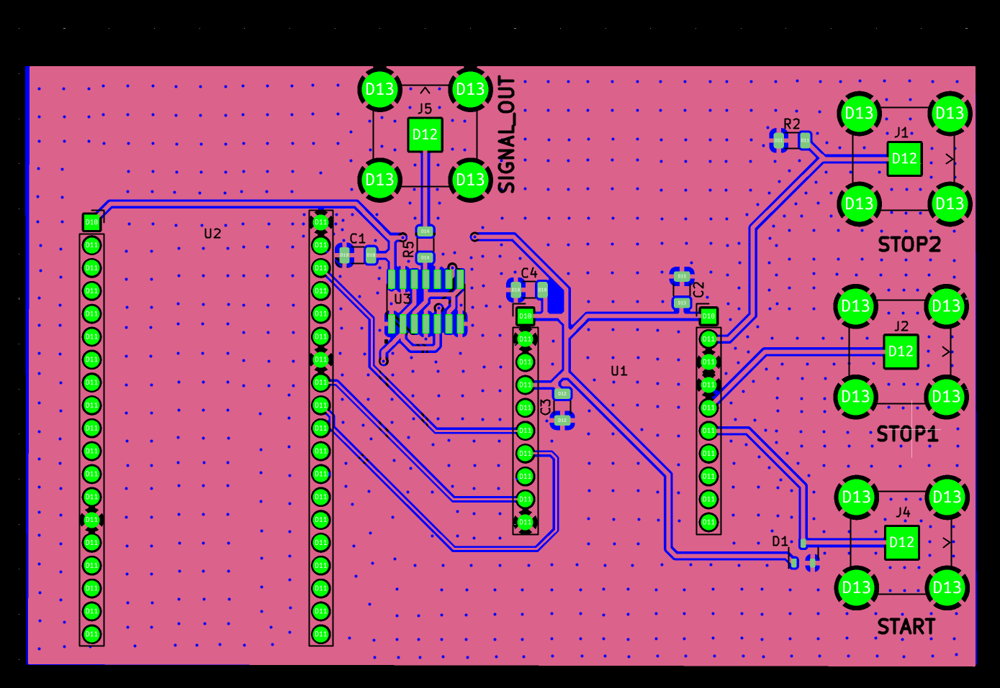

Electronic Measurement Systems for Muon Tomography

Description
The goal of the Muon Tomography group at Occidental College is to develop the technology for a new innovative use case of Muon Tomography: using the high energy particles to survey the earth for rare earth metals required for electrification. The method behind Muon Tomography is to use the naturally occurring muons that are created in the upper atmosphere by cosmic rays to penetrate the earth and measure the density of the material they pass through. Since muons are absorbed by dense materials, the rate of incoming muons can be used to determine the density of the material they pass through. My role in this research group was to improve the spatial resolution of locating muon impacts. The muon dectors I worked with are dual ended scintillator panels that produce a signal when a muon hits the panel. The signal progates in both directions across the panel at the speed of light, so the time difference between the two signals can be used to determine to location of the muon impact. I designed a custom PCB that uses an ESP32 microcontroller to measure the time difference between the two signals and send the data to a computer for analysis. Because the signals are traveling at the speed of light the timing measurements need to be on the nanosecond scale to get a spatial resolution of about one foot. For measurements this percise I used a Time to Digital Converter (TDC) to measure the time difference between the two signals, which was configured at the register level using the ESP32's SPI interface. I first began to validate the TDC's performance by using a signal generator to create two signals with a known time difference verified by an osciliscope and measuring the time difference with the TDC. This was at the microsecond scale but to test at the nanoscale a more robust platform was needed. To handle the high speed signals, I designed a PCB with lots of focus on signal integrity, reducing reflections and parasitic inductance. I was able to go through the whole process from schematic design to PCB layout to fabrication and assembly and began testing. Future work is still needed to implement the device onto the muon detectors.